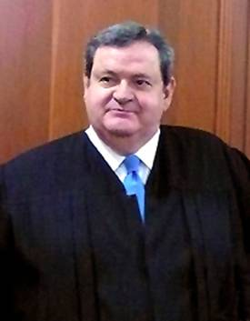

Ministro Sergio Salvador Aguirre Anguiano
Nació en Guadalajara, Jalisco, el 1o. de febrero de 1943.
Estudió la Licenciatura en Derecho en la Universidad Autónoma de Guadalajara en Guadalajara, Jal.
Ejerció la abogacía y la consultoría profesional del 9 de enero de 1970 al 30 de septiembre de 1974; fue notario asociado (Notaríanúmero 24 de Guadalajara) del 30 de septiembre de 1974 al 26 de enero de 1995.
Catedrático de Derecho Penal y Derecho Penal II, en la Universidad Panamericana 1988 a 1989; participante en congresos, foros, mesas redondas y conferencias sobre temas jurídicos.
Fue designado Ministro de la Suprema Corte de Justicia de la Nación por el Senado de la República el 26 de enero de 1995; asumió el cargo el 1o. de febrero de 1995.
Fue adscrito a la Segunda Sala Administrativa y del Trabajo el 7 de febrero de 1995.